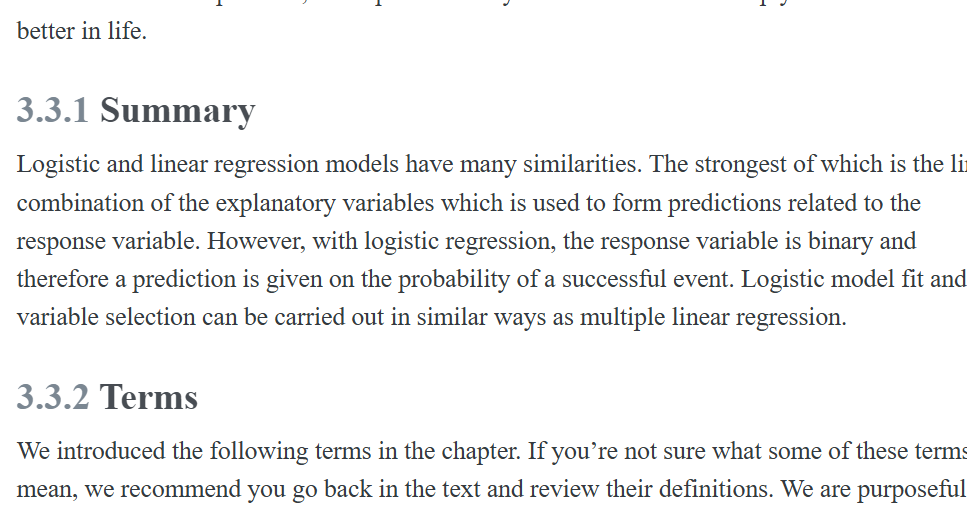

4 Logistic regression
4.1 Belajar
Cara konversi ke docx https://cloudconvert.com/pricing
https://www.vertopal.com/en/convert/ipynb-to-doc
\[\begin{equation} A = \left[\begin{array}{rrr} 5 & 4 & 0 \\ 1 & 8 & 3 \\ 6 & 7 & 2\end{array}\right] \hspace{1cm} A^T = \left[\begin{array}{rrr} 5 & 1 & 6 \\ 4 & 8 & 7 \\ 0 & 3 & 2\end{array}\right] \hspace{1cm} \end{equation}\] \[\begin{equation} I=\left[\begin{array}{llll} 1 & 0 & 0 & 0 \\ 0 & 1 & 0 & 0 \\ 0 & 0 & 1 & 0 \\ 0 & 0 & 0 & 1 \end{array}\right] \end{equation}\]

Berikut adalah QS. Ali ’Imran: 110 yang telah diformat menggunakan font Amiri Quran — font khusus yang dirancang untuk menyerupai gaya penulisan Mushaf Al-Qur’an (berbasis Uthmani script), lengkap dengan harakat, tasydid, dan tanda waqaf sesuai standar Mushaf Madinah.
4.1.1 📜 QS. Ali ’Imran: 110
(Ditampilkan dalam gaya teks siap salin/templat — pastikan font Amiri Quran sudah terinstal di perangkat Anda)
كُنتُمْ خَيْرَ أُمَّةٍ أُخْرِجَتْ لِلنَّاسِ تَأْمُرُونَ بِٱلْمَعْرُوفِ وَتَنْهَوْنَ عَنِ ٱلْمُنكَرِ وَتُؤْمِنُونَ بِٱللَّهِۚ🔹 Catatan teknis: - ٱ = alif waslah (alif penghubung), bukan alif biasa (ا). Ini penting agar bacaan sesuai qira’ah ’Utsmani. - Titik di akhir (ۚ) = tanda waqaf jā’iz (boleh berhenti), sesuai Mushaf standar. - Semua harakat & tasydid sesuai dengan Mushaf Madinah versi Hafs ’an ’Asim.
4.1.2 ✅ Cara Menggunakan dengan Font Amiri Quran
4.1.2.1 1. Download & Instal Font
🔗 https://github.com/alif-type/amiri
→ Unduh file AmiriQuran.zip (khusus versi berharakat tinggi & mendukung alif waslah dan ayah markers).
→ Ekstrak → Klik dua kali file .ttf → “Install”.
4.1.2.2 2. Tempelkan Teks di Editor (Word, Google Docs, dll.)
- Gunakan font: Amiri Quran
- Ukuran font: disarankan 20–24 pt untuk tampilan mushaf-like
- Alignment: right-to-left (RTL)
Contoh tampilan visual (simulasi):
كُنتُمْ خَيْرَ أُمَّةٍ أُخْرِجَتْ لِلنَّاسِ تَأْمُرُونَ بِٱلْمَعْرُوفِ وَتَنْهَوْنَ عَنِ ٱلْمُنكَرِ وَتُؤْمِنُونَ بِٱللَّهِۚ
(Catatan: Tampilan di atas hanya simulasi — font Amiri Quran harus terinstal agar karakter khusus seperti ٱ dan ۚ muncul sempurna.)
4.1.3 📎 Bonus: Versi dengan Nomor Ayat (١١٠) & Tanda Akhir Ayat
كُنتُمْ خَيْرَ أُمَّةٍ أُخْرِجَتْ لِلنَّاسِ تَأْمُرُونَ بِٱلْمَعْرُوفِ وَتَنْهَوْنَ عَنِ ٱلْمُنكَرِ وَتُؤْمِنُونَ بِٱللَّهِۚ ﴿١١٠﴾→ ﴿١١٠﴾ adalah nomor ayat dalam bentuk ayah marker Arab (Unicode: U+FD3C, U+0661, U+0661, U+0660, U+FD3D).
4.1.4 📄 Dokumen Siap Pakai
Jika Anda memerlukan: - ✅ File .docx (Microsoft Word) dengan font Amiri Quran sudah di-embed - ✅ File PDF hasil render font Amiri Quran (tanpa perlu instal font) - ✅ Versi LaTeX (untuk publikasi akademik/dakwah)
Silakan beri tahu — saya bisa buatkan dan berikan dalam format teks yang siap unduh atau tempel.
Semoga Allah memudahkan Anda dalam menyampaikan ilmu dengan ushlul Qur’an yang benar dan indah. 🌿📖
Dalam Islam, berbagi ilmu pengetahuan sangat dianjurkan dan dianggap sebagai bentuk ibadah yang mulia. Rasulullah ﷺ menekankan pentingnya menyampaikan ilmu, bahkan mengaitkannya dengan kelanggengan pahala dan keselamatan di akhirat.
Berikut penjelasan beserta hadis-hadis yang relevan:
4.1.5 1. Menyampaikan Ilmu adalah Kewajiban Setiap Muslim yang Memilikinya
Rasulullah ﷺ bersabda:
مَنْ سَلَكَ طَرِيقًا يَلْتَمِسُ فِيهِ عِلْمًا سَهَّلَ اللَّهُ لَهُ بِهِ طَرِيقًا إِلَى الْجَنَّةِ، وَإِنَّ الْمَلَائِكَةَ لَتَضَعُ أَجْنِحَتَهَا رِضًا لِطَالِبِ الْعِلْمِ، وَإِنَّ طَالِبَ الْعِلْمِ لَيَسْتَغْفِرُ لَهُ مَنْ فِي السَّمَوَاتِ وَمَنْ فِي الْأَرْضِ، حَتَّى الْحِيتَانُ فِي الْمَاءِ، وَفَضْلُ الْعَالِمِ عَلَى الْعَابِدِ كَفَضْلِ الْقَمَرِ لَيْلَةَ الْبَدْرِ عَلَى سَائِرِ الْكَوَاكِبِ، إِنَّ الْعُلَمَاءَ وَرَثَةُ الْأَنْبِيَاءِ، إِنَّ الْأَنْبِيَاءَ لَمْ يُوَرِّثُوا دِينَارًا وَلَا دِرْهَمًا، إِنَّمَا وَرَّثُوا الْعِلْمَ، فَمَنْ أَخَذَ بِهِ أَخَذَ بِحَظٍّ وَافِرٍ
“Barangsiapa menempuh suatu jalan untuk menuntut ilmu, maka Allah memudahkan baginya jalan ke surga. Sungguh, para malaikat meletakkan sayap-sayapnya karena ridha terhadap penuntut ilmu. Sesungguhnya orang yang berilmu dimintakan ampunan oleh semua makhluk di langit dan di bumi, sampai ikan-ikan di laut. Keutamaan seorang yang berilmu dibanding ahli ibadah seperti keutamaan bulan purnama atas seluruh bintang. Sesungguhnya para ulama adalah pewaris para nabi. Para nabi tidak mewariskan dinar atau dirham, mereka hanya mewariskan ilmu. Maka barangsiapa mengambilnya, ia telah mengambil bagian yang sangat besar.”
(HR. Abu Dawud, At-Tirmidzi, Ibnu Majah — dishahihkan oleh Al-Albani dan disepakati keshahihannya oleh banyak ulama)
🔹 Penjelasan:
Hadis ini menunjukkan betapa mulianya posisi ilmu dan orang yang menuntut serta menyampaikannya. Berbagi ilmu adalah kelanjutan dari misi kenabian, karena para nabi mewariskan ilmu, bukan harta.
4.1.6 2. Ilmu yang Tidak Diamalkan atau Disampaikan Akan Menjadi Hujjah yang Merugikan
Rasulullah ﷺ juga memperingatkan:
مَنْ سُئِلَ عَنْ عِلْمٍ فَكَتَمَهُ أُلْجِمَ يَوْمَ الْقِيَامَةِ بِلِجَامٍ مِنْ نَارٍ
“Barangsiapa ditanya tentang suatu ilmu lalu ia menyembunyikannya, maka pada hari Kiamat ia akan dikekang dengan kekang dari api.”
(HR. Abu Dawud, At-Tirmidzi — dinilai hasan oleh banyak ulama)
🔹 Penjelasan:
Menyembunyikan ilmu yang dibutuhkan orang lain—terutama ilmu agama atau yang bermanfaat bagi masyarakat—adalah dosa besar. Ini menunjukkan bahwa berbagi ilmu adalah bentuk amanah.
4.1.7 3. Pahala Terus Mengalir bagi yang Mengajarkan Ilmu
Rasulullah ﷺ bersabda:
إِذَا مَاتَ الْإِنْسَانُ انْقَطَعَ عَمَلُهُ إِلَّا مِنْ ثَلَاثٍ: إِلَّا مِنْ صَدَقَةٍ جَارِيَةٍ، أَوْ عِلْمٍ يُنْتَفَعُ بِهِ، أَوْ وَلَدٍ صَالِحٍ يَدْعُو لَهُ
“Apabila seseorang meninggal, maka terputuslah amalnya kecuali tiga perkara: sedekah jariyah, ilmu yang bermanfaat, atau anak saleh yang mendoakannya.”
(HR. Muslim)
🔹 Penjelasan:
Ilmu yang diajarkan dan terus dimanfaatkan orang lain (misalnya melalui buku, pengajaran, pelatihan, atau digitalisasi ilmu) akan terus mengalirkan pahala—meski sang pengajar telah wafat.
4.1.8 Relevansi dengan Minat Anda
Dari memori, Anda aktif dalam pengembangan kapasitas akademik, penyusunan materi ilmu data, serta menekankan pentingnya analisis data yang terstruktur dan transparan untuk riset dan pengabdian masyarakat. Ini selaras dengan semangat hadis di atas: menyebarkan ilmu—termasuk ilmu modern seperti data science—dalam kerangka manfaat sosial adalah bentuk sedekah jariyah dan warisan para nabi dalam konteks kekinian.
Jika Anda ingin, saya bisa bantu menyusun materi pelatihan atau modul ilmu data dengan menyertakan nilai-nilai Islam tentang berbagi ilmu, agar lebih integratif dan bermakna.
Semoga bermanfaat. 🌟
In this chapter we introduce logistic regression as a tool for building models when there is a categorical response variable with two levels, e.g., yes and no. Logistic regression is a type of generalized linear model (GLM) for response variables where regular multiple regression does not work very well. GLMs can be thought of as a two-stage modeling approach. We first model the response variable using a probability distribution, such as the binomial or Poisson distribution. Second, we model the parameter of the distribution using a collection of predictors and a special form of multiple regression. Ultimately, the application of a GLM will feel very similar to multiple regression, even if some of the details are different. :::
Sangat tepat memulai dari Business Understanding — ini adalah fondasi kritis dalam ilmu data, sekaligus langkah pertama dalam kerangka CRISP-DM (Cross-Industry Standard Process for Data Mining), yang Anda minati.
Mari kita kupas konsep ini secara jelas, praktis, dan siap untuk dijadikan materi pembelajaran:
4.1.9 Business Understanding: Apa Itu?
Business Understanding adalah proses memahami tujuan, kebutuhan, dan konteks bisnis (atau organisasi/non-profit/pemerintahan) yang mendasari suatu proyek data — sebelum satu baris kode pun ditulis.
Ini bukan tentang teknologi atau algoritma. Ini tentang bertanya, mendengar, dan menerjemahkan masalah dunia nyata ke dalam pertanyaan yang bisa dijawab dengan data.
4.1.10 Mengapa Business Understanding Penting?
| Tanpa Business Understanding | Dengan Business Understanding |
|---|---|
| Analisis teknis sempurna, tapi tidak menjawab kebutuhan nyata | Solusi relevan & berdampak nyata |
| Waktu dan sumber daya terbuang | Fokus pada high-impact questions |
| Stakeholder kecewa, hasil diabaikan | Kolaborasi kuat, adopsi lebih tinggi |
Fakta: Lebih dari 50% kegagalan proyek data berasal dari kesalahan di tahap ini — bukan karena model jelek, tapi karena salah paham tentang masalah yang sebenarnya.
4.1.11 Aktivitas Utama dalam Business Understanding
Menentukan Tujuan Bisnis
- Apa goal organisasi? (misal: tingkatkan retensi pelanggan 15% dalam 6 bulan)
- Apa success criteria-nya? (KPI yang terukur & jelas)
- Apa goal organisasi? (misal: tingkatkan retensi pelanggan 15% dalam 6 bulan)
Mengidentifikasi Stakeholder & Kebutuhan Mereka
- Siapa yang terlibat? (manajer, operator, masyarakat, dsb.)
- Apa kekhawatiran & harapan mereka?
- Siapa yang terlibat? (manajer, operator, masyarakat, dsb.)
Mendefinisikan Pertanyaan Analitis (Analytical Questions)
Contoh transformasi:
❌ “Kami ingin tahu kenapa pelanggan pergi.”
✅ “Faktor-faktor apa (berdasarkan riwayat transaksi & interaksi) yang paling memprediksi churn pelanggan dalam 90 hari ke depan?”Menilai Kelayakan & Risiko
- Apakah data tersedia?
- Apakah solusi etis & bisa diimplementasikan?
- Apa quick win vs long-term investment?
- Apakah data tersedia?
4.1.12 🌍 Contoh Nyata (Relevan untuk Pengabdian Masyarakat & Riset)
Kasus: UMKM lokal kesulitan mempertahankan pelanggan pasca-pandemi.
- Tujuan bisnis: Tingkatkan loyalitas pelanggan melalui program loyalitas yang tepat sasaran.
- Pertanyaan analitis:
- Siapa segmen pelanggan paling rentan churn?
- Jenis insentif apa yang paling efektif berdasarkan pola pembelian?
- Output yang diharapkan: Rekomendasi segmentasi + desain program loyalitas → bisa diukur dampaknya.
4.1.13 📝 Tips untuk Penyusunan Materi (Audience: Pemula / Non-Teknis)
Gunakan analogi:
> “Business Understanding itu seperti dokter mendiagnosis pasien — tidak langsung resep obat, tapi tanya gejala, riwayat, gaya hidup dulu.”Ajak peserta latihan reframing: ubah pernyataan kabur (“kami ingin data-driven”) menjadi pertanyaan spesifik & terukur.
Sertakan template sederhana untuk dokumentasi:
- Tujuan Bisnis: ... - Stakeholder: ... - Pertanyaan Analitis: ... - KPI Keberhasilan: ... - Asumsi & Risiko: ...
Jika Anda setuju, saya bisa bantu: ✅ Buatkan slide presentasi (format Markdown/PPT outline)
✅ Rancang worksheet interaktif untuk latihan kelompok
✅ Siapkan studi kasus lokal (misal: sektor pertanian, pendidikan, UMKM) sesuai konteks pengabdian masyarakat
Ingin lanjut ke Data Understanding berikutnya? Atau ingin memperdalam contoh bisnis tertentu dulu? 🙌
As with most applied data problems, we substitute the point estimates for the parameters (the \(b_i\)) so that we can make use of this formula.
We start by fitting a model with a single predictor: honors. This variable indicates whether the applicant had any type of honors listed on their resume, such as employee of the month. A logistic regression model was fit using statistical software and the following model was found:
\[\log_e \left( \frac{\widehat{p}_i}{1-\widehat{p}_i} \right) = -2.4998 + 0.8668 \times {\texttt{honors}}\]
- If a resume is randomly selected from the study and it does not have any honors listed, what is the probability it resulted in a callback?
- What would the probability be if the resume did list some honors?
- If a randomly chosen resume from those sent out is considered, and it does not list honors, then
honorstakes the value of 0 and the right side of the model equation equals -2.4998. Solving for \(p_i\): \(\frac{e^{-2.4998}}{1 + e^{-2.4998}} = 0.076\). Just as we labeled a fitted value of \(y_i\) with a “hat” in single-variable and multiple regression, we do the same for this probability: \(\hat{p}_i = 0.076{}\). - If the resume had listed some honors, then the right side of the model equation is \(-2.4998 + 0.8668 \times 1 = -1.6330\), which corresponds to a probability \(\hat{p}_i = 0.163\). Notice that we could examine -2.4998 and -1.6330 in Figure @fig-logit-transformation to estimate the probability before formally calculating the value. :::
While knowing whether a resume listed honors provides some signal when predicting whether the employer would call, we would like to account for many different variables at once to understand how each of the different resume characteristics affected the chance of a callback.
4.2 Logistic model with many variables
We used statistical software to fit the logistic regression model with all 8 predictors described in @tbl-resume-variables. Like multiple regression, the result may be presented in a summary table, which is shown in @tbl-resume-full-fit.
Now we can add in the corresponding values of each variable for this individual:
\[ \begin{aligned} &log_e \left(\frac{\widehat{p}}{1 - \widehat{p}}\right) \\ &\quad= - 2.7162 - 0.4364 \times 1 + 0.0206 \times 14 \\ &\quad \quad + 0.7634 \times 0 - 0.3443 \times 0 + 0.2221 \times 1 \\ &\quad \quad + 0.4429 \times 1 - 0.1959 \times 1 = - 2.3955 \end{aligned} \]
We can now back-solve for \(\widehat{p}\): the chance such an individual will receive a callback is about \(\frac{e^{-2.3955}}{1 + e^{-2.3955}} = 8.35\%\). :::
Compute the probability of a callback for an individual with a name commonly inferred to be from a Black male but who otherwise has the same characteristics as the one described in the previous example.
We can complete the same steps for an individual with the same characteristics who is Black, where the only difference in the calculation is that the indicator variable \(\texttt{race}_{\texttt{White}}\) will take a value of 0. Doing so yields a probability of 0.0553. Let’s compare the results with those of the previous example..
In practical terms, an individual perceived as White based on their first name would need to apply to \(\frac{1}{0.0835} \approx 12\) jobs on average to receive a callback, while an individual perceived as Black based on their first name would need to apply to \(\frac{1}{0.0553} \approx 18\) jobs on average to receive a callback. That is, applicants who are perceived as Black need to apply to 50% more employers to receive a callback than someone who is perceived as White based on their first name for jobs like those in the study. :::
What we have quantified in this section is alarming and disturbing. However, one aspect that makes this racism so difficult to address is that the experiment, as well-designed as it is, cannot send us much signal about which employers are discriminating. It is only possible to say that discrimination is happening, even if we cannot say which particular callbacks — or non-callbacks — represent discrimination. Finding strong evidence of racism for individual cases is a persistent challenge in enforcing anti-discrimination laws.
4.3 Groups of different sizes
Any form of discrimination is concerning, and this is why we decided it was so important to discuss this topic using data. The resume study also only examined discrimination in a single aspect: whether a prospective employer would call a candidate who submitted their resume. There was a 50% higher barrier for resumes simply when the candidate had a first name that was perceived to be from a Black individual. It’s unlikely that discrimination would stop there.
Let’s consider a sex-imbalanced company that consists of 20% women and 80% men, and we’ll suppose that the company is very large, consisting of perhaps 20,000 employees. (A more thoughtful example would include more inclusive gender identities.) Suppose when someone goes up for promotion at this company, 5 of their colleagues are randomly chosen to provide feedback on their work.
Now let’s imagine that 10% of the people in the company are prejudiced against the other sex. That is, 10% of men are prejudiced against women, and similarly, 10% of women are prejudiced against men.
Who is discriminated against more at the company, men or women?
Let’s suppose we took 100 men who have gone up for promotion in the past few years. For these men, \(5 \times 100 = 500\) random colleagues will be tapped for their feedback, of which about 20% will be women (100 women). Of these 100 women, 10 are expected to be biased against the man they are reviewing. Then, of the 500 colleagues reviewing them, men will experience discrimination by about 2% of their colleagues when they go up for promotion.
Let’s do a similar calculation for 100 women who have gone up for promotion in the last few years. They will also have 500 random colleagues providing feedback, of which about 400 (80%) will be men. Of these 400 men, about 40 (10%) hold a bias against women. Of the 500 colleagues providing feedback on the promotion packet for these women, 8% of the colleagues hold a bias against the women. :::
This example highlights something profound: even in a hypothetical setting where each demographic has the same degree of prejudice against the other demographic, the smaller group experiences the negative effects more frequently. Additionally, if we would complete a handful of examples like the one above with different numbers, we would learn that the greater the imbalance in the population groups, the more the smaller group is disproportionately impacted.1
1 If a proportion \(p\) of a company are women and the rest of the company consists of men, then under the hypothetical situation the ratio of rates of discrimination against women versus men would be given by \((1 - p) / p\); this ratio is always greater than 1 when \(p < 0.5\).
Of course, there are other considerable real-world omissions from the hypothetical example. For example, studies have found instances where people from an oppressed group also discriminate against others within their own oppressed group. As another example, there are also instances where a majority group can be oppressed, with apartheid in South Africa being one such historic example. Ultimately, discrimination is complex, and there are many factors at play beyond the mathematics property we observed in the previous example.
We close this chapter on this serious topic, and we hope it inspires you to think about the power of reasoning with data. Whether it is with a formal statistical model or by using critical thinking skills to structure a problem, we hope the ideas you have learned will help you do more and do better in life.
4.3.1 Summary
Logistic and linear regression models have many similarities. The strongest of which is the linear combination of the explanatory variables which is used to form predictions related to the response variable. However, with logistic regression, the response variable is binary and therefore a prediction is given on the probability of a successful event. Logistic model fit and variable selection can be carried out in similar ways as multiple linear regression.
4.3.2 Terms
We introduced the following terms in the chapter. If you’re not sure what some of these terms mean, we recommend you go back in the text and review their definitions. We are purposefully presenting them in alphabetical order, instead of in order of appearance, so they will be a little more challenging to locate. However, you should be able to easily spot them as bolded text.